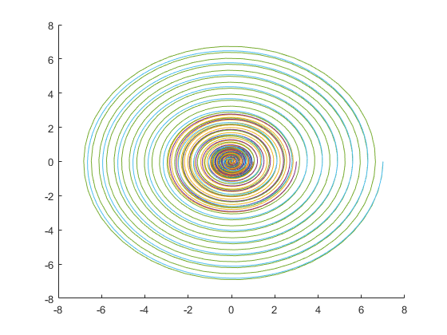
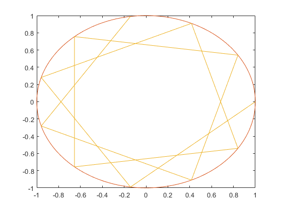
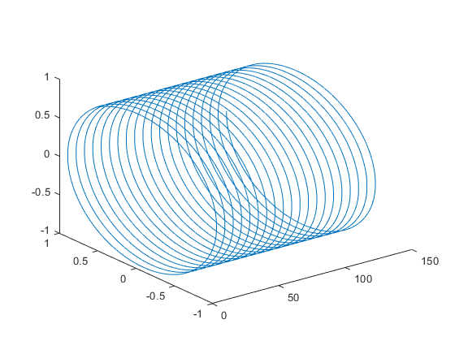
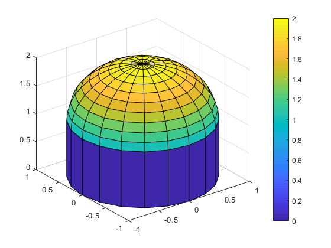
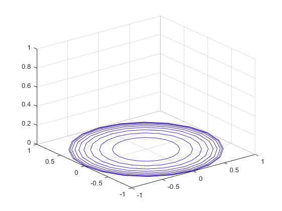

Hw2
劉弘祥 106022103 2018/11/30~12/6
Contents
以上分別為各問題的code
以下為測試用程式主體：
function []= test_code_hw2() clear all; test_1(); test_2(); test_3(); test_4(); test_5(); end
3-2-11
請使用 MATLAB 的兩個指令，分別在平面 上畫出螺旋圖，從原點開始，逐漸向外繞圈擴散，
以下為spiral函式
function graph=spiral(r,c) % 產生螺旋線圈的函式 % r表示從原點開始到最後走的長度 % c表示走的圈數 % no return a=linspace(0,r,1000); b=linspace(0,2*pi*c,1000); graph=polar(b,a); end
以下為測試用函式
function []= test_1() fprintf('Here is the demo for problem：%s .\n','3-2-11'); hold on; r=[1 3 7];%距離，可根據需求修改，長度自適應 c=[20 10];%圈數，可根據需求修改，長度自適應 for i=1:length(r) for j=1:length(c) disp('輸入為:'); fprintf('從0到%f長，走%f圈\n',r(i),c(j)); spiral(r(i),c(j)); end end hold off; end
Here is the demo for problem：3-2-11 . 輸入為: 從0到1.000000長，走20.000000圈 輸入為: 從0到1.000000長，走10.000000圈 輸入為: 從0到3.000000長，走20.000000圈 輸入為: 從0到3.000000長，走10.000000圈 輸入為: 從0到7.000000長，走20.000000圈 輸入為: 從0到7.000000長，走10.000000圈
3-2-12 (a)
試寫一函數 regGeneralStar(n, k)， 其功能為畫出一個圓心在 (0, 0)、半 徑為 1 的圓，並在圓內畫出一個內接星 形，其中一頂點位於 1+0*i（複數表示法 ），下一頂點則位於 exp(i*2*pi*k/n)，依 此類推。
以下為regGeneralStar函式
function graph=regGeneralStar(n,k) % 繪製一個圓心在（0，0），半徑為1的圓 % 並在圓內部畫一個內接星形 plot(1,1); hold on; Q=linspace(0,2*pi,200);%建立0到2pi的數據 plot(cos(Q),sin(Q));%繪製單位圓 for i=1:n R(i)=2*pi*k/n*i; %建立角度序列 長度n end plot(cos(R),sin(R)); %繪製星星 hold off; end
以下為測試用函式
function []= test_2() fprintf('Here is the demo for problem：%s .\n','3-2-12-a'); sample=[11,3]; fprintf('regGeneralStar(%d,%d),結果如下',sample(1),sample(2)); regGeneralStar(sample(1),sample(2)); end
Here is the demo for problem：3-2-12-a . regGeneralStar(11,3),結果如下
3-2-12 (b)
承上，呼叫regGeneralStar(79,i)從1到1000，並製作成GIF
結果輸出（因檔案過大故上傳連接）： https://imgur.com/2uNuAEr
4-2-2
Use two MATLAB statements (or less) to plot a simple spiral of radius 1 along the x-axis in a 3D space. The plot you generated should be as close as possible to the one shown next.
function []=test_3() plot3(1:0.0001:40*pi,cos(1:0.0001:40*pi),sin(1:0.0001:40*pi)) end
4-2-7
Create a plot of dome，使用 cylinder 和 colorbar
function []=test_4() hold off; [x,y,z]=sphere;%製作一個球 x=x(11:end,:);%取其上半 y=y(11:end,:);% z=z(11:end,:)+1;% surf(x,y,z)%繪製半球 hold on; cylinder%繪製圓柱 colorbar; hold off; end
5-6
假設有一圓球半徑為1，圓心在 (0,0,0) ,試畫出此圓球的上半部網狀圖，並將其30 條等高線同時畫在曲面的下方。
因為無可調整輸入變數，故不另外寫function。 程式如下：
function []=test_5() [x,y,z]=sphere; x=x(11:end,:); y=y(11:end,:); z=z(11:end,:); meshc(x,y,z,30); end